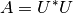

scipy.linalg.cholesky¶
- scipy.linalg.cholesky(a, lower=False, overwrite_a=False, check_finite=True)[source]¶
Compute the Cholesky decomposition of a matrix.
Returns the Cholesky decomposition, or  of a Hermitian positive-definite matrix A.
Parameters : a : (M, M) array_like
Matrix to be decomposed
lower : bool
Whether to compute the upper or lower triangular Cholesky factorization. Default is upper-triangular.
overwrite_a : bool
Whether to overwrite data in a (may improve performance).
check_finite : boolean, optional
Whether to check the input matrixes contain only finite numbers. Disabling may give a performance gain, but may result to problems (crashes, non-termination) if the inputs do contain infinities or NaNs.
Returns : c : (M, M) ndarray
Upper- or lower-triangular Cholesky factor of a.
Raises : LinAlgError : if decomposition fails.
Examples
>>> from scipy import array, linalg, dot >>> a = array([[1,-2j],[2j,5]]) >>> L = linalg.cholesky(a, lower=True) >>> L array([[ 1.+0.j, 0.+0.j], [ 0.+2.j, 1.+0.j]]) >>> dot(L, L.T.conj()) array([[ 1.+0.j, 0.-2.j], [ 0.+2.j, 5.+0.j]])